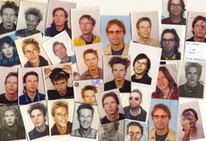

|
ABER DEN SINN DES LEBENS HAB ICH IMMER NOCH NICHT RAUSGEFUNDEN
 Jan Peters | D 1997 – 2007 | 90 Min.
Format: BetaSP
Material: Super 8, MiniDV
Originalsprache: Deutsch
Drehbuch: Jan Peters
Kamera: Jan Peters
Ton: Jan Peters
Schnitt: Jan Peters
Mit Jan Peters
Produktion: Jan Peters
www.abbildungszentrum.de
Die Jan Peters-Rolle: Jedes Jahr hat er zu seinem Geburtstag eine Rolle Super-8-Film gedreht, später dann mit der digitalen Kamera, und in diesen zwei bis drei Minuten etwas von und über sich preisgegeben. Man kann es exhibitionistisch nennen, wie er sich da jedes Mal um Kopf und Kragen redet, bis sich endlich das Ende der Filmrolle durch die Verfärbung des Materials ankündigt. Mal enthusiastisch, mal müde, oft zweifelnd, hadert er, wie jedermann, mit den Geschicken des eigenen Tuns, lässt das vergangene Jahr Revue passieren, hinterfragt das Erreichte und plant für das nächste.
„Denn natürlich verwischt der Filmemacher Jan Peters mit seinem dichten textlichen und visuellen Zeichensystem den Menschen gleichen Namens und schafft etwas Drittes: die Kunstfigur Jan Peters.“ (Claus Löser)
Jan Peters,geb. 1966 in Hannover. 1988 bis 1999 Studium der Visuellen Kommunikation an der Hochschule für bildende Künste in Hamburg. 1994 Mitbegründer des Filmemacherkollektivs „Abbildungszentrum“ dem 2001 die Gründung einer Filmproduktion gleichen Namens folgt. Lebt und arbeitet als Filmemacher, Hörspielautor und Videokünstler in Hamburg und Genf.
Filme (Auswahl): Schwarzärgerer 1995 | November 1-30 1998 | Dezember 1-31 1999
Ich bin 33 2000 | Wie ich ein Höhlenmaler wurde 2001 | Bye Bye Tiger 2004 | Wie ich ein freier Reisebegleiter wurde 2007 | Aber den Sinn... 2007
zurück
|